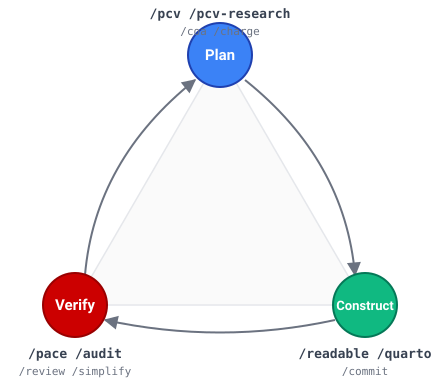

Spec-Driven Development, in practice
Spec-Driven Development is the working assumption that planning, constructing, and verifying are three separate jobs — not one blurred conversation with a model. You write down what you intend before you build it, you build against that written intent, and you audit the built artifact against the intent with something other than the agent that produced it. The diagram shows the loop; the commands on each vertex show how this toolkit executes it.
This didn't start as an SDD project. It started as a PhD-research toolkit where a fabricated citation or a misquoted number is the kind of mistake that ends a dissertation. The hard rules and verification commands are the scar tissue from those mistakes. The SDD label is retroactive — the pattern became visible when the broader AI-engineering conversation (GitHub's SpecKit, Obra's Superpowers, the agents.md convention) converged on the same decomposition.
If you want to see SDD running in a single command, /pcv-research is the clearest example: it spins up independent proposer agents, runs a critic pass, converges them on a written plan, then hands off to construction. Plan-Construct-Verify, with the seams visible. Everything else in the toolkit is a variation on that discipline.
Performance Gaps the Toolkit Fills
A collection of 14 Claude Code commands that catch errors, prevent bad plans, and keep complex projects on track. Organized into four layers: verification, workflow, content, and triage. Validated across hundreds of production sessions.
Commands are patterns to adapt, not install blindly. Fork the command files and tune them to your workflow — the toolkit is designed to be customized, not black-boxed.
Performance Gaps the Toolkit Fills
AI coding assistants are powerful but unstructured. Three recurring gaps:
Verification gap
How do you know the AI’s output is correct — especially for citations, numerical results, and analysis?
Planning gap
Complex multi-component projects need structured planning, not ad-hoc prompting.
Documentation gap
Research progress disappears when the terminal closes. Session context is ephemeral — summaries and startup briefs give the AI a precise, workstream-specific record to load at the start of each session, rather than rebuilding state from scratch. This is context engineering: deciding what the AI knows, when it knows it, and keeping that signal clean.
This toolkit addresses all three gaps with reusable commands that add structure without adding friction. Each command was built for a real research task, validated in production, and generalized for others.
Commands
Verification Layer
| Command | What it does | |
|---|---|---|
/pcv |
Plan-Construct-Verify — structured planning with sequential clarification, adversarial review, and human approval gates before any code or document is written. PCV v3.14 by Dr. Michael G. Kay, NC State University. | Learn more → |
/coa |
Council of Agents — spawns specialists with distinct professional perspectives (Skeptic, Economist, Practitioner, etc.) to independently analyze a question, then synthesizes convergence and divergence. | Learn more → |
/pace |
Parallel Agent Consensus Engine — routes a task through two independent players with coaching review, then cross-compares for verification through redundancy. | Learn more → |
/audit |
Citation & numerical audit — verifies every cited metric exists on disk and every quoted number matches the source paper. Catches misquoted figures and fabricated citations before publication. | Learn more → |
Workflow Layer
| Command | What it does | |
|---|---|---|
/startup | Reads recent work summaries and orients you on where you left off — across all active workstreams. | Learn more → |
/dailysummary | Creates a dated summary of the day’s work with cross-references to decisions and open TODOs. | Learn more → |
/weeklysummary | Aggregates daily summaries into weekly workstream reports; surfaces dormant threads and stale TODOs. | Learn more → |
/commit | Analyzes staged changes and creates logically grouped commits — prevents mixed-concern commits. | Learn more → |
/simplify | Reviews code or documents for redundancy, complexity, and performance issues via 5-lens analysis. | Learn more → |
/improve | Self-reflective meta-agent that audits your own Claude Code infrastructure and proposes improvements. | Learn more → |
Content Layer
| Command | What it does | |
|---|---|---|
/quarto | Generates Quarto RevealJS slide decks from background documents. Claude Code reads, designs, and renders the deck — including Mermaid diagrams — in a single command. | Learn more → |
/readable | Extracts text from PDF, Word, and HTML files — batch processing, image-based OCR, and persistent .txt files for grep-based citation work. | Learn more → |
Triage Layer
| Command | What it does | |
|---|---|---|
/review | Three-lens document review — runs a document through Skeptic + Practitioner + Editor readers in parallel, then synthesizes takeaways, project relevance, and three concrete implications. For documents others hand you that you need to understand quickly — advisor memos, papers, long emails, spec drafts. | Learn more → |
/help | Socratic triage — describe your situation in one line; /help asks zero or one clarifying question, then recommends 1–3 toolkit commands. Does not execute — you run the recommended command yourself. | Learn more → |
/coa vs. /pace — which one do you need?
Both commands spawn independent agents. The difference is the type of question you're asking.
| /coa — Council of Agents | /pace — Parallel Consensus | |
|---|---|---|
| Question type | Multiple valid answers exist | One correct answer exists |
| Goal | Structured disagreement & synthesis | Verified, cross-checked deliverable |
| Output | Advisory synthesis — you decide | Consolidated result ready to use |
| Best for | Research design, methodology choices, strategic decisions | Numerical verification, proof checking, document drafting |
| Rule of thumb | No right answer? Use /coa. | Right answer exists? Use /pace. |
Evidence
All evidence is from actual production usage (2025–2026). The same tools work across simulation, documentation, code review, and presentation workflows.
| Command | What it prevents | What it produces |
|---|---|---|
/audit |
A cited figure changed silently when moved between documents. The error reached a print-ready deliverable undetected — caught only because the source was grep-verified at the last step. | A line-by-line verification report with VERIFIED, MISMATCH, and NOT ON DISK verdicts for every cited value in the document. |
/pace |
A logical error in an analytical calculation passed single-agent review undetected. Independent parallel agents caught it before the result was reported. The correction was material. | A consolidated, cross-checked deliverable with an explicit convergence and divergence analysis showing exactly where agents agreed and where they didn’t. |
/coa |
A methodological choice appeared settled until a council perspective surfaced the one assumption that made it fragile. That assumption became the focus of subsequent validation work. | A structured synthesis across independent expert perspectives — convergence map, divergence map, and a concrete recommendation with conditions for revisiting. |
/pcv |
Prevents building the wrong thing by requiring human approval of a plan before any construction begins. Scope ambiguity and unstated assumptions are resolved at the moment of lowest cost. | An approved, adversarially reviewed plan with verification criteria defined before a single line is written or a single file is changed. |
/startup |
Prevents losing track of where a project stands when multiple workstreams are active across sessions. Reconstruction from memory is replaced by reconstruction from evidence. | A prioritized, action-ready briefing derived from your own session records — what’s done, what’s blocked, and what to do next. |
Methodology note. All agents in CoA and PACE use the same underlying Claude model. Convergence between agents indicates consistency within the model’s reasoning space, not independent validation. Cross-model validation via an external model (optional, via separate MCP integration) partially addresses this limitation.
Common questions
Does this work in a collaborative lab with multiple researchers?
Yes. Each researcher installs the toolkit independently in their own Claude Code environment. Commands like /commit and /startup operate on your local working tree and your own summary history — they don't interfere with other team members. For shared codebases, /commit produces clean, logically grouped commits that make code review significantly easier for the whole team.
What does "hundreds of production sessions" mean?
These commands have been used daily across a PhD dissertation project spanning simulation modeling, academic writing, formal proof verification, and conference presentations — over a period of several months. The evidence table above shows specific examples of errors caught and deliverables produced.
Why not just use ChatGPT, Copilot, or another AI assistant?
Those tools are general-purpose. This toolkit is a structured layer on top of Claude Code specifically — commands that enforce verification discipline, manage persistent context across sessions, and coordinate multiple independent agents. The value is in the workflow, not the underlying model.
Installation
Prerequisite: Claude Code must be installed. The toolkit runs inside Claude Code, not separately.
-
Clone the toolkit (pinned to v0.1.0).
git clone https://github.com/jbenhart44/Research-Toolkit.git cd Research-Toolkit git checkout v0.1.0 -
Run the installer.
This installs all 14 commands.bash install.sh -
Configure for your project.
Edit~/.claude/toolkit-config.mdto set your project name and workstreams. -
Type
/pcvin any Claude Code session to verify it works.
Prefer a versioned archive for citation? Download the v0.1.0 tarball · All releases & notes
Cite This Toolkit
If you use or build on this toolkit, please cite:
BibTeX entry
@software{benhart_kay2026researchamp,
author = {Benhart, Jake and Kay, Michael G.},
title = {Research Amp Toolkit: Amplification Commands for AI-Assisted Research with Claude Code},
year = {2026},
version = {0.1.0},
url = {https://github.com/jbenhart44/Research-Toolkit},
urldate = {2026-04-23}
}The toolkit bundles PCV v3.14 (Dr. Kay, NC State) as its planning foundation.
Contact
Jake Benhart & Dr. Michael G. Kay
NC State University — Operations Research
jbenhart@ncsu.edu ·
github.com/jbenhart44